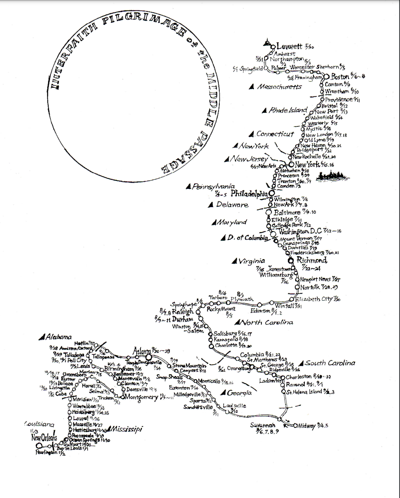

Chat
Ramona Peters
Jason Mancini
Majel Peters
Excerpted from
A Conversation on Indian Whaling with Ramona Peters & Jason Mancini
Ramona in ceremonial regalia.
"And there is a spiritual connection. And this another level of the genetic part, the genetic memory, or the reptilian brain, all of these things, you know, like, I'm like, as a traditionalist, accessing that was, you know, something taught early on. And so I've always listened or tuned into these things, and feel that oneness with my ancestors." — Ramona Peters
Edward James, Ramona's great grandfather,

19th century Mashpee birth records featuring the family name 'Hicks'
And there is a spiritual connection. And this another level of the genetic part, the genetic memory, or the reptilian brain, all of these things, you know, like, I'm like, is a traditionalist, accessing that was, you know, something taught early on. And so I've always listened or tuned into these things, and feel that oneness with my ancestors. And so this grandfather, you know, has played a part in, you know, what I see, or how I see it.
When… there was a time when the tribe sent, we heard about the Lummis, in the northwest coast, and they were canning salmon. And we thought, well, let's learn how to can things and different, you know, fish—so we sent a couple of guys out there, one of them was one of my younger brothers, Billy, and Lincoln Hendricks. And so we sent them out there to learn this technique and come home to teach us. Well, they got out there, and they did not want to come home. In fact, one of them is still there. My brother, he stayed out there, but he did pass away. But he became a diver. And they still work with aqua farming and all of that, but because there was so the hunting was good. The Northwest coast is wonderful. And I did go out to see for myself, what are you guys doing out here? And they could completely live off the land. They could completely—and they were canning venison. I mean, I helped. We were canning salmon and venison and for, you know, we’re bear clan, and so like, I was like, in heaven. We were helping other people, you know, cut fish, because, they, you know, how big of a catch those things are. So, but while I was there, there were James, there were Hicks—there were family names from back East.
And, you know, I found one elder who started to have the conversation, you know, where do these names come from? And have you ever, you know, were there, whale ships around or whatever, you know, at this was, we got interrupted, our conversation got interrupted several times. And so I never did get a real study. But I could feel it and see it. And I could see where Mashpee, we sent these guys out randomly out to the northwest coast, and we picked the right spot. And they found that that was their home too. And so I'm thinking oh, some of our guys might have gotten off ship there—stayed, you know, maybe they came back, and maybe they didn't. We haven't really traced any of these individuals. So in future, this exhibit that we're going to do, we're going to expand it each year to do layers and layers of information that we can offer to our community and to the visitors.
I always had the impression that my mother was in conversation with our ancestors, particularly when she would get quiet and get lost in thought. I learned to consider them as part of our living family—as if we all exist in one time.
There is never enough time to learn all there is to learn from elders. Even now with the tools to do it effectively and thoughtfull, there is the scarcity of the greatest resource: time. Not to mention the desire to just share and bask, not extract.
It's so fascinating to be able to reconnect a lot of this stuff, too and know that, you know, it's there. And, you know, whether there are letters or some kind of other communication going on, you know, that may be the process of discovery within the community, but to know that so many of your community members traveled, [yes], sort of idea of traveling, went to new places and saw new things and became parts of other communities. It's just fascinating, absolutely fascinating, [and Indigenous communities too]
So many of us still have compulsion to explore.

1830 Scrimshaw engraving. (Credit: Nantucket Historical Association)
No, so what about the Seminoles? I saw at the New Bedford Whaling Museum, they have a scrimshaw piece that is of a Seminole native—Yeah. And, and so here we are — that’s Florida yeah—there's likely to be a stopping place. And these whalers that, you know, like when I look at scrimshaw, these guys had a lot of time on their hands, and they were wonderful, amazing artists, but they had a lot of time on their hands and what they chose to carve and to dedicate hours and hours if not, you know, weeks or months. So, here's this Seminole on one side, it looks like a — I was trying to borrow these for our exhibit—so I picked those that had Indigenous images. So the Hawaiian Tiki, and Northwest coast had a beautiful salmon effigy carved into it, one scrimshaw piece. Another one was... So that was four that I could … there was nothing from South America that I could identify as Indigenous. But that may not happen this year. But they said there was three of them that we could use, and one of them is on exhibit now someplace else or there.
And they’re all at the New Bedford Whaling Museum?
Yes.
Wow, that's fascinating, it is so hard to find that connection in scrimshaw. [Yeah] it seems. [Yeah]. To know that it does exist.
Namioka, Edward James' wife; to whom he would have written.
"I do have some letters from that period. And that one letter was to the wife, and it was so formal, that and so laden with sort of biblical language that I couldn't see the, you know, there was no romance, there was no, you know, lamenting that I miss you or any of that it was all very formal. How are thy children? You know?" — Ramona Peters
Yeah. Well, we, you know, I was scrolling through their online collections, and looking at the images, and it's like, wow, like, you know, so, again, that gives you another in depth look at what these fellows, these artists who were, you know, scratching away with, you know, a little piece of metal. It's like, tattoo artists, you know, pre-tattoo artists. But these Seminole guy, on one side, I think it was a Seminole woman, and on the other side was an English woman. So, of course, you know, the sailors spent a lot of time thinking about women. So there, but the vast majority of those are things for women or about women. So when they got home, they could, you know, gift her. But Mashpee guys are a little different. I do have some letters from that period. And that one letter was to the wife, and it was so formal, that and so laden with sort of biblical language that I couldn't see the, you know, there was no romance, there was no, you know, lamenting that I miss you or any of that it was all very formal. How are thy children? You know? It was like…
How did our ancestors address each other before contact? How did the European practicing of locking living thoughts into detailed writing impact what we shared and how?
Who are they writing for? [Yeah] Who are they writing to and expecting that somebody else might be seeing this?
It may be so you know, because in those days, it was just a letter, and it was to this person in Mashpee. Not a street, not a zip code, any of that—that so, you know, who knows, but the original stamps are still on the envelopes. And I have a few of those in some are asking for their lay. That kind of thing. So anyways, those are, I hope that other people in the community have letters like that, as well.
Solomon Attaquin was the first Marshpee postmaster. All of the Mashpee families knew each other and made up the nearly the entirety of the population
Does it give you a sense of how the women are managing the home front when these guys are away? Like, what are there conversations going on in the letters? Is everything okay? Like? Are they boarding people? Are they just raising kids? I mean, there's a lot of really incredible independence, I would imagine?
Some of them, we know were organizing! Collecting signatures for movements including the abolitionist, racial equality, and women's rights.
Right, Oh, yeah. Well, the, the mean, one example I can speak to is grandfather's. She— his wife. She didn't take on boarders, but she did have like a little, some sort of a restaurant, you might call it of that era where you could stop there and buy a baked potato. And she you know, so she kept a ledger of everything people ate, you know. So, so many plates of food per day, it wasn't just a number, but it was also what they had. And I had that ledger, but I don't know where it is now, but it was definitely. And when he did come home, he brought things, he brought some interesting things. I have two porcelain dolls that he brought for my grandmother, his daughter
From where? Was it from China?
Wampanoags did sail as far as China during the era.
The gifted dolls
No, they were like German or something like that. The box is still there. They’re in the box. The two little tiny little dolls are almost identical. They have, you know, like little hair and clothing and they’re really intricately made. So, you know, what, they're 150 years old or something. These dolls he brought back and I, you know…
I remember when my mother discovered them in the attic. What else is hidden up there?
That sounds like an amazing story in and of itself, like, where did he get them? What choices were being made about…?
Ramona's grandmother, Philena James (l), grandfather Carl Avant, and mother, Barbara Peters (née Avant) (r). Philena was the recipient of the dolls.

Ramona holding the whale crop
Yeah. And then yeah, he wrote on them for her, you know, so it was like, he wrote on the box. So it was like a gift to my grandmother or his daughter, like a birthday or something like that. Well, you know, there's families like my family. Somebody said something about when we were talking about this exhibit, and I said, well you know, wish we had a, like a whalebone knife. And I thought—yeah, I seen one of those in my house. Because my mother's house became, you know, like, she took things from my grandmother's house and they remodeled that they emptied it out. So there's all these things that's where that ship model comes in. And she saw the picture of the boat. So there, yeah, it's downstairs and they said, Yeah, it was passed around and it's actually in a toolbox. You know, it still has the wooden sheath, you know, that was like, it's beautifully made—perfect fit. Just one of the, what do you call them? so one of the stop plates, it was whalebone too and so one of those broke off, but it's flat on one side and rounded on the other. So it must have been for you know, like defleshing or something? And you know, it's not a knife knife. It's a very specific tool. And me, I don't know the whale tools at all— the industry tools— so but I can see that this is not a you know, it's not for you know, cutting up dinner or... it’s a tool.
And so there are things like that we have in the family. I have a staff that I often take and I have taken it to different countries. It’s from him. It's a whalebone horse crop. And [I love it ], it’s like, and I carved…and you know, like okay, so we found these—I found two of them. And I gave one to my sister, my older sister. And she's doesn’t remember where I'd be giving it to her or what happened to it? Oh, well, yeah, hers were more ornate than mine. Mine’s round for the most part, where that would actually and it slightly curved so it would touch the horse in a certain way. And up top, it's squared off, so, it tapers into— it becomes like a thin square. So I carved it— a couple of grooves—and did a peyote stitch in there, and then I added just some feathers. So I use it as like—it’s got like a strap, not a strap —like a line on it so I can wear it across my back. I took it on that pilgrimage and walked over 1,000 miles with it through the east coast from Amherst to Georgia, Southern Georgia. In any case, that’s been around. Use it for ceremonies and all kinds of stuff. But you know, it's like a grandfather’s thing, but I still thought of it as —it had— It's like the whale, they go everywhere, they navigate the world. And so have I been to 17 countries. But so did they, and that's what's back to that, and not about me, but back to what he brought back or what he kept, because I know he could have traded or sold all sorts of things. You could see by his picture, some of the other whalers were pretty flamboyant. And he was just, you know, low key. I have an inkling that there are more than one wife out there. I don't know that for a fact that I have an inkling.
There's a strange sensation of feelingthe ancestoral knowledge and the presence of the objects, yet not having them in your possession. Different items, including family photos, are dispersed among the family.
"And it isn't this big steamroller, sort of moving through the ocean, that native people are making choices, and they can get off a vessel anytime they hit land and hop on another vessel anytime one comes into port, you know, and I think that's just incredible." — Dr. Mancini
I've often wondered for a lot of the folks that I study what that what that means and choices that are made and vessels they get on and the ports they go to just sort of wondering how strategic some of this is, you know, it's fascinating to see the movement and we, you know, from my perspective, just getting into this entire project is really been an opportunity to explore choices, you know, and usually we think about, I think the broader Public, academic audience scholars, whoever, you know, sort of think this big giant machine is in motion that Europeans are driving. And it's just their whale vessels, their places, and so on. And I think what's so fascinating about some of the stuff that I've been playing around with and the conversation I've been having are what emerges when you start to look at a group of people, including the native population, and you can sort of peel off those layers and really see what they're doing and the choices they're making. And it isn't this big steamroller, sort of moving through the ocean, that native people are making choices, and they can get off a vessel anytime they hit land and hop on another vessel anytime one comes into port, you know, and I think that's just incredible. You know, and to see some, some of these guys, I mean, when I went to Hawaii, I found two Pequot guys and five Shinnecock guys. They were probably there for five or 10 years, making a choice to stay there. Whale from there and then they came home. Yeah. You know, so, families. Yeah. Oh, yeah. You gotta wonder, you know, and what's the legacy of that? You know, that may be, you know, the, the sense that you have when you go to these places, or just know that other people are out there, that there there's something there?
We know of relations in Spain (grativated to the Basque region), Bermuda, the Carribean, Hawaii, the Pacific Northwest...
"Natives that were, you know, enslaved or put on those ships, they wouldn't leave the docks. They would refuse to go inland and settle or work any sugarcane or any of that. They refused to, and they would work only on the docks doing, you know, what do you call a longshoreman or whatever? They scared the masters that tried to control them, they terrified them. And I could see, so they were waiting until they got a chance to get on a boat and go home. You know, I mean, they just were not going to leave — 'I'm not leaving the car!'
Oh, definitely, you know, yeah, it's, I mean, I've sat on some of those beaches. And last year, I did, Kuai, which I never been to, and Maui. And I felt again, you know, like, I was looking at the same water from the same place, that somebody in my line, and my genes. And it's mesmerizing. When you're, you know, sitting in that place. It's sort of, it goes beyond, you know, there's no thought at all. That's, that's great. And you saw it. So you found individuals. You know, back when we were looking for people who were abducted. After King Philip's War, I went to St. Croix and Trinidad and Tobago, and then, you know, Cuba. And what I found, and then eventually we found people in Bermuda, as you know, that the people, the natives that were, you know, enslaved or put on those ships, they wouldn't leave the docks. They would refuse to go inland and settle or work any sugarcane or any of that. They refused to, and they would work only on the docks doing, you know, what do you call a longshoreman or whatever? They scared the masters that tried to control them, they terrified them. And I could see, so they were waiting until they got a chance to get on a boat and go home. You know, I mean, they just were not going to leave — I'm not leaving the car. Don’t make me get out of the car. It's so smart. So that in Trinidad, that was this story there that they, you know, people—oh, yes we, you know, like all the historians, and they knew they remembered very well or they knew about this and they wouldn't leave and and so it became you know, how some, you know, say the Italian master bricklayers or whatever. But there was the American Indians of the Northeast Coast were the Longshoremen. Yeah.
Mobility = survival. This continued connection to home—and mobility—drove an entire way of life.
Wow, that's an amazing personality that emerges within the community for something like that.
So tell me more about what you found out there. I’m gonna try and stop—I’m getting too excited so I keep talking. But I really want to just hear what more about what you've discovered and where
(I can relate)
"And when you look at what's going on, you know, these trends towards sea when people are getting bound up in systems of indentured servitude and slavery and oppression. There's this response to get out, and maritime world offers indigenous people, people of color and opportunity in ways that were maybe unprecedented or newly discovered anyway, at that time." — Dr. Mancini
Yeah. Um, Wow. So I think a lot of my, I think initially just sort of trying to figure out where people are going and the kinds of places that emerge. And you know, if I sort of look at the whole history, and I can show you slides afterwards, but if I look at the whole history of what's emerged, I think what's what's most fascinating to me is the suggestion of so many Native people in so many different places, and one of the earliest stories that fascinated me, has been piracy. So if we think about you know, the Golden Age of Piracy is really in the first quarter of the 18th century. This is when you know, all these famous pirates that are sort of hijacking and still, you know, doing, what they're doing freebooting and everything. And it's, it amazes me that the time period and the context in which that's occurring is at the same time that native people across the East Coast are losing all of their land. Just massive dispossession. And then when you look at, and read the accounts of these pirate vessels, and all of the literature on it, you know, the captains are the people who have the name and are famous and you know, sort of a written about in they're all sort of English seamen who you know, get their names. But when you look at who's in the crew, the crew is always made anonymous. But as many as 50 to 60% of the crew are people of color. And when you look at what's going on, you know, these trends towards sea when people are getting bound up in systems of indentured servitude and slavery and oppression. There's this response to get out, and maritime world offers Indigenous people, people of color and opportunity in ways that were maybe unprecedented or newly discovered anyway, at that time. And I think piracy really sort of fascinated me, you know, so that's one area where I've started nibbling around a little bit to see you know, and there are accounts like,Black Sam Bellamy's ship, the Whydah, which wrecked off of coast of Cape Cod, in the early 1700s. Supposedly, the pilot of that vessel was a Nauset Indian, so you know, so that's kind of interesting. And then you have the Block Island pirates that are kind of well known. And then, you know, there, there's an Indian, who I think is from Groton, Connecticut locally here, who got started getting caught up, and one of the, I can't remember which pirate vessel he was on, may have been Blackbeard or somebody like that. But he gets, sort of, put through the, they eventually got caught a bunch of guys got hanged, but he was let go. Which is kind of interesting. But you know, more than that, you know, there are these pirate bases that form in, I think, in the Bahamas, in Madagascar, that talk about these dark, maroon races of people. And I just wonder to what extent, these are the places where native guys end up because, you know, this is where they're out of the jurisdiction of English sea control and stuff like that. So anyway, that's, that's one avenue. But you know, moving forward in time, you start to see the process of dispossession really effect…
Before you leave the pirate part, did you run across stories about the Screechum sisters in Mashpee?
No, or at least not recently.
They were, they're said to have been aligned with pirates and kept—hid treasure and kept it for them. And most—they were notoriously known as witches, so nobody messed with them. Yeah, you know.
I was surprised to their story being told by non-Native folks interested in "haunted houses" and "folklore" without a lot of historical context, and often without a mention of them being Indigenous.
I definitely have to poke around that. Yeah, that sounds like a great story, yeah.
Hidden Treasure. Yeah, yeah.
"...it's, it's so lopsided, and you know, towards English sea control and English land power, that this is an opportunity for, in many ways, native people to engage this new structure that's really centered on dispossessing. So it's a form of resistance like a real resistance." — Dr. Mancini
Yeah, and definitely, you know, there are these pirate stories that show up in the local islands. You know, which I think I think there's a natural, in my mind, there's a natural affinity in terms of the way that power is being navigated during this time period. Because it's, it's so lopsided, and you know, towards English sea control and English land power, that this is an opportunity for, in many ways, native people to engage this new structure that's really centered on dispossessing. So it's a form of resistance like a real resistance.
It’s like the bank robberies. You know, when they started, I imagine it was something similar. I mean, you making me think that, you know, if people are reading about and hearing about all of a sudden there's this mass looting, you know, that it would start to take place in all different levels of, you know, it was like so when, you know, the James brothers and others were doing that what else was going on during that time? That’s a very interesting connection.
There was—I'm trying to remember the details of it now, but there's an interesting story. I think it's from the 1730s — 1737 is sticking in my mind, but some kind of revolt— Indian revolt that was going to take place. It was either Martha's Vineyard, maybe Nantucket [Chatham] I think it might have been Nantucket. I can't— it was definitely Wampanoag.
Yeah. It might have been in Chatham, The Mattamoyak
Okay, yeah. But as I, as I recall, there was an effort for I mean, it was so long after King Philip's War that it struck me it was like 50 years after King Philip's War, and there was this effort, or at least a conversation, or rumors that Indians were going to rise up and seize back this place. And all I could think of was like, this is really interesting. And on a community level, this is this is 50 years after King Philip's War. You know, Indians are thought to have been rendered powerless, yet, something's going on. And when you look at how many Indian men are at sea, and what they're probably seeing out there, and other places and ideas of piracy and revolt, in this power structure, kind of, in some ways being grabbed back. It always made me wonder, like, these guys had to have known something and knew that there were opportunities, maybe in the end, it didn't work out, you know, is, you know, history unfolds, but at the time, you know, they probably thought that yeah, here's, here's a chance, you know, and maybe we're gonna grab it so...
"...Chappaquiddick? She goes oh, yeah, yeah, that was the code word. said when the dem Indians she goes when their ship came, We all knew the word was Chappaquiddick, and that meant they were here to take us home, anybody that wanted to go, they could get on the ship and go. and I had heard this before myself, in fact, on the Vineyard, I do have a recording of Rachel and Donald Molonson, and they talked about—so our Native men were engaged in taking—rescuing enslaved Africans and taking them back into, either all the way to Africa, or into the diaspora into the middle zone, where they were no longer slaves..."
— Ramona Peters
Ramona and Majel at the Pilgrimage kick-off event.
Map of the InterFaith Pilgrimage of the Middle Passage route.
A partial list of the stops. Some walkers continued through the Carribean and across the Atlantic to Sengal.
Along that the same the, the effect of enslaved Africans being imported into our territories. That long Walk I was talking about, the pilgrimage, we were retracing the history of African slavery. And I was one of the native people on the walk. And I was looking at how that impacted native communities. Most there was no native communities that I could find along the sea coast, except for up here in New England. But it was in South Carolina, and, no I'm sorry, North Carolina, and is that where Charleston? [I think that’s South Carolina, yeah it’s Charlston, South Carolina] We were staying at the Arthur Ashe thing. And I decided to go down to the, to the bay, and which is on the other side of the main street of town, little village, it wasn't the major city—a little village. And walk down there and there was an African American lady, elder, with a bucket and fishing rod, she was coming back. And so I said, Oh, did you catch anything, you know? And she's like, she's like checking my accent. Looking at me like, you don’t belong here [laughter] where are you from? But she did say no, she didn’t catch—she caught something better yesterday and talked on a little bit and she says, So what are you doing here, child, you know, and I told her what we were doing was like a 65 people that were walking this walk, and she said, hmm oh, yeah, yeah she goes, but, you know like, she goes Chappaquiddick. And I’m like Chappaquiddick? She goes oh, yeah, yeah, that was the code word. said when the dem Indians she goes when their ship came,We all the word was Chappaquiddick, and that meant they were here to take us home, anybody that wanted to go, they could get on the ship and go. and I had heard this before myself, in fact, on the Vineyard, I do have a recording of Rachel and Donald Molonson and they talked about so our Native men were engaged in taking rescuing enslaved Africans and taking them back into either all the way to Africa or into the diaspora into the middle zone, where they were no longer slaves, but there were other islands out there. Belize, you know, they were places where people were going, and we knew the shore. We knew how to do it, and we were doing it covertly. And so one of the stopovers, of course, was on the Vineyard and so Mr. and Mrs. Molonson had shackles that were taken off of people. And we all talked about it. You know, we did an interview for TV program once and we're just talking about what tidbits we knew of that era. But I, I had through family, oral tradition heard about us rescuing enslaved people. And of course, later on, we were a safe place— Mashpee was a safe place, because anybody of color was not safe frankly, you know, for several 100 years in some cases, but they're actually taking ships and navigating them through that part of the Atlantic. I don't know what time of year or whatever. But she showed us, I was with one of the other walkers, she showed us where the ship would come in it says, so we all knew was certain tide, when you heard that code word, on the tide, you could get out there, and they would come in and get you. And then they’d be gone— by the dawn, you'd be gone.